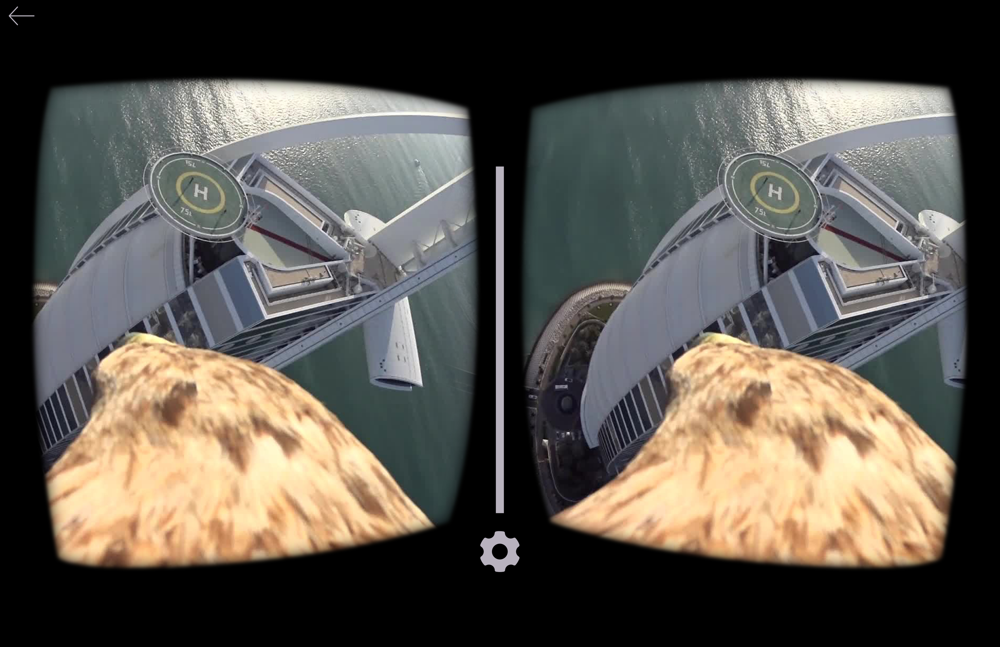
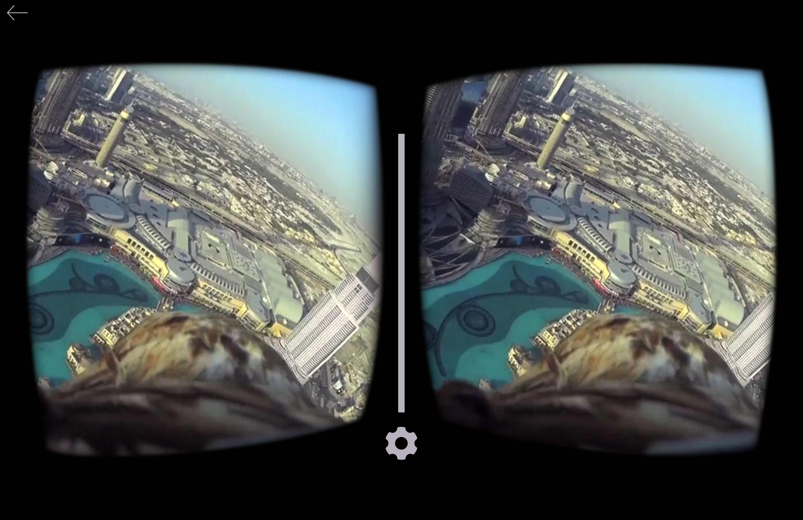
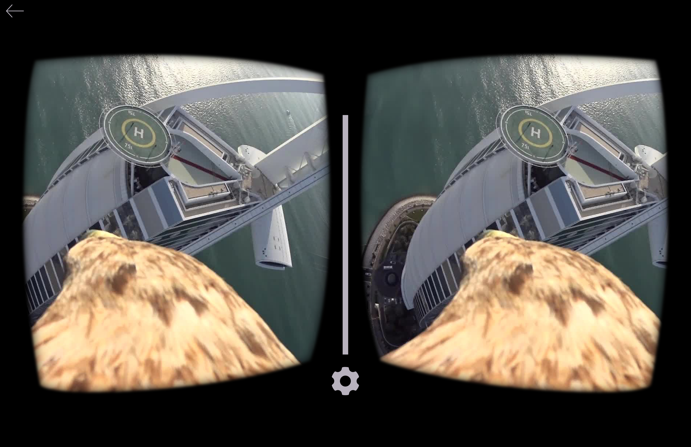
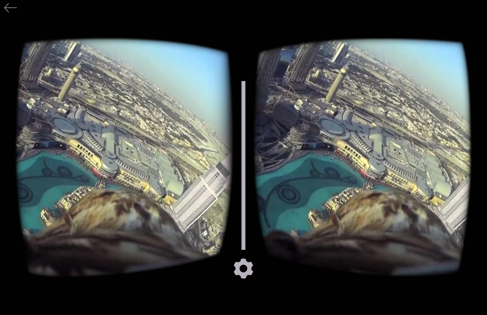

Dubai Tourism
Dubai Falcon Digital Experiences
Originating with Bedouin tribes, the majestic art of falconry has for centuries, been a vital part of desert life. While its necessity as a hunting tool has evolved to that of regal sport, it has gained an almost mythical status — becoming an iconic symbol for the glimmering, modern city that has arisen from ancient sands.
Virtual Falcon
A tourism engagement unlike any other and designed for use with "Google Cardboard," this VR engagement would provide potential travelers with a breathtaking, birds-eye view of Dubai.
Taking flight from a desert landscape, the viewer would be treated to an exhilarating 360 experience. Whether soaring through radiant corridors of towering glass and steel, or sweeping across the magnificent landscapes of sun-baked beaches, man-made islands and turquoise seas, our viewers would behold this true engineering marvel and be encouraged to experience Dubai for real.
 



FALCON SEO RICH MEDIA VIDEO FETCHER
What if you could experience another world from thousands of miles away?
Dubai has proven that if you can dream it, you can build it, shape it, and experience it. And the digital world is no different.
While most online tourism initiatives simply advertise, we utilized search engine optimization technology to tap into the centuries-old cultural heritage of falconry to engage the audience and bring a Dubai vacation experience to the user.
Use password "thework" for sample video of the experience.
DUBAI PINTEREST PIN
What if the world’s tallest building had the world’s tallest pin?
Standing at an awe-inspiring 2,717 feet, the Burj Khalifa holds the record as the tallest building on the planet, and the “city of endless possibilities” would recreate this modern wonder on Pinterest — setting another Guinness World Record in the process. Only this time, in the digital world.
DUBAI TOURISM RESPONSIVE PLATFORM
Collaborated with the team at BBDO Atmosphere on updating and making design revisions to the existing Dubai Responsive Platform. Team Members included ACD/Art Director Geovany Sosa, ACD/Art Director Darrin Amelio, and Senior Art Director Chris Bosler.
Writer: ACD/Writer Jason Lambert